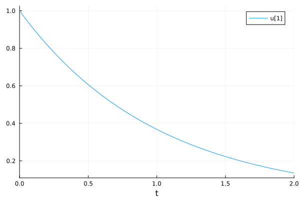
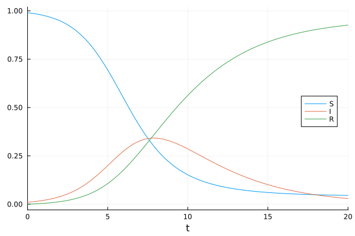
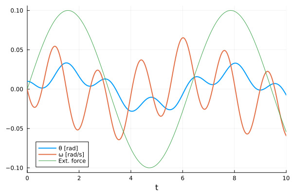
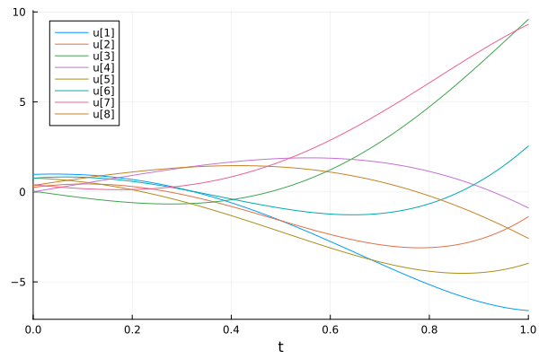

Ordinary Differential Equations (ODEs)#
Define a model function representing the right-hand-side (RHS) of the system.
Out-of-place form:
f(u, p, t)whereuis the state variable(s),pis the parameter(s), andtis the independent variable (usually time). The output is the right hand side (RHS) of the differential equation system.In-place form:
f!(du, u, p, t), where the output is saved todu. The rest is the same as the out-of-place form. The in-place function may be faster since it does not allocate a new array in each call.Initial conditions (
u0) for the state variable(s).(Optional) parameter(s)
p.Define a problem (e.g.
ODEProblem) using the model function (f), initial condition(s) (u0), simulation time span (tspan == (tstart, tend)), and parameter(s)p.Solve the problem by calling
solve(prob).
Radioactive decay example#
The decaying rate of a nuclear isotope is proportional to its concentration (number):
State variable(s)
\(C(t)\): The concentration (number) of a decaying nuclear isotope.
Parameter(s)
\(\lambda\): The rate constant of nuclear decay. The half-life: \(t_{\frac{1}{2}} = \frac{ln2}{\lambda}\).
using OrdinaryDiffEq
using Plots
The exponential decay ODE model, out-of-place (3-parameter) form
expdecay(u, p, t) = p * u
expdecay (generic function with 1 method)
Setup ODE problem
p = -1.0 ## Parameter
u0 = 1.0 ## Initial condition
tspan = (0.0, 2.0) ## Simulation start and end time points
prob = ODEProblem(expdecay, u0, tspan, p) ## Define the problem
sol = solve(prob) ## Solve the problem
retcode: Success
Interpolation: 3rd order Hermite
t: 8-element Vector{Float64}:
0.0
0.10001999200479662
0.34208427066999536
0.6553980136343391
1.0312652525315806
1.4709405856363595
1.9659576669700232
2.0
u: 8-element Vector{Float64}:
1.0
0.9048193287657775
0.7102883621328676
0.5192354400036404
0.35655576576996556
0.2297097907863828
0.14002247272452764
0.1353360028400881
Visualize the solution with Plots.jl.
plot(sol)

Solution handling#
https://docs.sciml.ai/DiffEqDocs/stable/basics/solution/
The mostly used feature is sol(t), the state variables at time t. t could be a scalar or a vector-like sequence. The result state variables are calculated with interpolation.
sol(1.0)
0.3678796381978344
sol(0.0:0.1:2.0)
t: 0.0:0.1:2.0
u: 21-element Vector{Float64}:
1.0
0.9048374180989603
0.8187305973051514
0.7408182261974484
0.670319782243577
0.6065302341562359
0.5488116548085096
0.49658509875978446
0.4493280239179766
0.4065692349272286
⋮
0.30119273799114377
0.2725309051375336
0.24659717503493142
0.22313045099430742
0.20189530933816474
0.18268185222253558
0.16529821250790575
0.14956912660454402
0.13533600284008812
sol.t: time points by the solver.
sol.t
8-element Vector{Float64}:
0.0
0.10001999200479662
0.34208427066999536
0.6553980136343391
1.0312652525315806
1.4709405856363595
1.9659576669700232
2.0
sol.u: state variables at sol.t.
sol.u
8-element Vector{Float64}:
1.0
0.9048193287657775
0.7102883621328676
0.5192354400036404
0.35655576576996556
0.2297097907863828
0.14002247272452764
0.1353360028400881
The SIR model#
A more complicated example is the SIR model describing infectious disease spreading. There are 3 state variables and 2 parameters.
State variable(s)
\(S(t)\) : the fraction of susceptible people
\(I(t)\) : the fraction of infectious people
\(R(t)\) : the fraction of recovered (or removed) people
Parameter(s)
\(\beta\) : the rate of infection when susceptible and infectious people meet
\(\gamma\) : the rate of recovery of infectious people
using OrdinaryDiffEq
using Plots
Here we use the in-place form: f!(du, u, p ,t) for the SIR model. The output is written to the first argument du, without allocating a new array in each function call.
function sir!(du, u, p, t)
s, i, r = u
β, γ = p
v1 = β * s * i
v2 = γ * i
du[1] = -v1
du[2] = v1 - v2
du[3] = v2
return nothing
end
sir! (generic function with 1 method)
Setup parameters, initial conditions, time span, and the ODE problem.
p = (β=1.0, γ=0.3)
u0 = [0.99, 0.01, 0.00]
tspan = (0.0, 20.0)
prob = ODEProblem(sir!, u0, tspan, p)
ODEProblem with uType Vector{Float64} and tType Float64. In-place: true
Non-trivial mass matrix: false
timespan: (0.0, 20.0)
u0: 3-element Vector{Float64}:
0.99
0.01
0.0
Solve the problem
sol = solve(prob)
retcode: Success
Interpolation: 3rd order Hermite
t: 17-element Vector{Float64}:
0.0
0.08921318693905476
0.3702862715172094
0.7984257132319627
1.3237271485666187
1.991841832691831
2.7923706947355837
3.754781614278828
4.901904318934307
6.260476636498209
7.7648912410433075
9.39040980993922
11.483861023017885
13.372369854616487
15.961357172044833
18.681426667664056
20.0
u: 17-element Vector{Vector{Float64}}:
[0.99, 0.01, 0.0]
[0.9890894703413342, 0.010634484617786016, 0.00027604504087978485]
[0.9858331594901347, 0.012901496825852227, 0.0012653436840130785]
[0.9795270529591532, 0.017282420996456258, 0.003190526044390597]
[0.9689082167415561, 0.02463126703444545, 0.006460516223998508]
[0.9490552312363142, 0.03827338797605378, 0.012671380787632141]
[0.9118629475333939, 0.06347250098224964, 0.024664551484356558]
[0.8398871089274511, 0.11078176031568547, 0.049331130756863524]
[0.7075842068024722, 0.19166147882272844, 0.1007543143747994]
[0.508146028721987, 0.29177419341470584, 0.20007977786330722]
[0.31213222024413995, 0.3415879120018046, 0.34627986775405545]
[0.18215683096365565, 0.3099983134156389, 0.5078448556207055]
[0.10427205468919205, 0.22061114011133276, 0.6751168051994751]
[0.07386737407725845, 0.14760143051851143, 0.7785311954042301]
[0.05545028910907714, 0.07997076922865315, 0.8645789416622697]
[0.047334990695892025, 0.04060565321383335, 0.9120593560902746]
[0.04522885458929332, 0.029057416110814603, 0.925713729299892]
Visualize the solution
plot(sol, labels=["S" "I" "R"], legend=:right)

sol[i]: all components at time step i
sol[2]
3-element Vector{Float64}:
0.9890894703413342
0.010634484617786016
0.00027604504087978485
sol[i, j]: ith component at time step j
sol[1, 2]
0.9890894703413342
sol[i, :]: the time series for the ith component.
sol[1, :]
17-element Vector{Float64}:
0.99
0.9890894703413342
0.9858331594901347
0.9795270529591532
0.9689082167415561
0.9490552312363142
0.9118629475333939
0.8398871089274511
0.7075842068024722
0.508146028721987
0.31213222024413995
0.18215683096365565
0.10427205468919205
0.07386737407725845
0.05545028910907714
0.047334990695892025
0.04522885458929332
sol(t, idxs=1): the 1st element in time point(s) t with interpolation. t can be a scalar or a vector.
sol(10, idxs=2)
0.28576194586813003
sol(0.0:0.1:20.0, idxs=2)
t: 0.0:0.1:20.0
u: 201-element Vector{Float64}:
0.01
0.010713819530291442
0.01147737632963402
0.012293955863322855
0.013167034902663112
0.014100286700885235
0.015097588761311391
0.016163031360643162
0.01730091874845442
0.018515771780096318
⋮
0.03561030823283819
0.03471833422630802
0.03384816241692694
0.03299928861769087
0.032171218254199684
0.031363466364657075
0.030575557599870556
0.029807026223251362
0.029057416110814645
Non-autonomous ODEs#
In non-autonomous ODEs, term(s) in the right-hand-side (RHS) maybe time-dependent. For example, in this pendulum model has an external, time-dependent, force.
\(\theta\): pendulum angle
\(\omega\): angular rate
M: time-dependent external torque
\(l\): pendulum length
\(g\): gradational acceleration
using OrdinaryDiffEq
using Plots
function pendulum!(du, u, p, t)
l = 1.0 ## length [m]
m = 1.0 ## mass [kg]
g = 9.81 ## gravitational acceleration [m/s²]
du[1] = u[2] ## θ'(t) = ω(t)
du[2] = -3g / (2l) * sin(u[1]) + 3 / (m * l^2) * p(t) # ω'(t) = -3g/(2l) sin θ(t) + 3/(ml^2)M(t)
return nothing
end
u0 = [0.01, 0.0] ## initial angular deflection [rad] and angular velocity [rad/s]
tspan = (0.0, 10.0) ## time interval
M = t -> 0.1 * sin(t) ## external torque [Nm] as the parameter for the pendulum model
prob = ODEProblem(pendulum!, u0, tspan, M)
sol = solve(prob)
plot(sol, linewidth=2, xaxis="t", label=["θ [rad]" "ω [rad/s]"])
plot!(M, tspan..., label="Ext. force")

Linear ODE system#
The ODE system could be anything as long as it returns the derivatives of state variables. In this example, the ODE system is described by a matrix differential operator.
\(\dot{u} = Au\)
using OrdinaryDiffEq
using Plots
A = [
1.0 0 0 -5
4 -2 4 -3
-4 0 0 1
5 -2 2 3
]
u0 = rand(4, 2)
tspan = (0.0, 1.0)
f = (u, p, t) -> A * u
prob = ODEProblem(f, u0, tspan)
sol = solve(prob)
plot(sol)

This notebook was generated using Literate.jl.